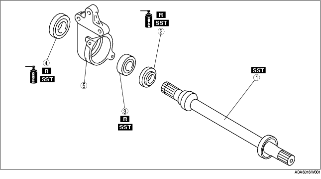
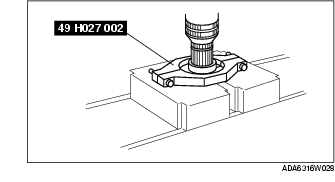
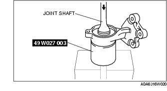

Joint shaft disassembly/assembly
1. Disassemble in the order indicated in the table.
2. Assemble in the reverse order of disassembly.

|
1
|
Joint shaft
|
|
2
|
Dust seal (LH)
|
|
3
|
Bearing
(See Bearing Assembly Note)
|
|
4
|
Dust seal (RH)
|
|
5
|
Bracket
|
Joint Shaft Disassembly Note
1. Remove the joint shaft using a press.

Dust Seal (LH) And Bearing Disassembly Note
1. Remove the dust seal (LH) and bearing using the SSTs.

2. If the bearing remains on the joint shaft, set the SST and joint shaft to the press.

Dust Seal (RH) Disassembly Note
1. Remove the dust seal (RH) using the SSTs.

Dust Seal (RH) Assembly Note
1. Apply grease to a new dust seal lip.
2. Install the dust seal (RH) using the SSTs.

Bearing Assembly Note
1. Install a new bearing using the SSTs.

Dust Seal (LH) Assembly Note
1. Apply grease to a new dust seal lip.
2. Install a new dust seal (LH) using the SSTs and steel plate.

Joint Shaft Assembly Note
1. Press the joint shaft in using the SST and a press.
